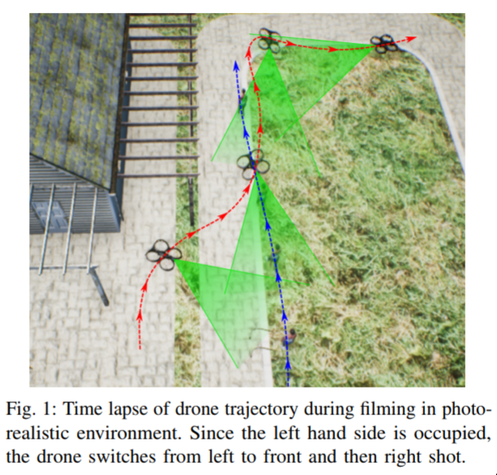

üé• Deep learning showreel!
We closely follow research in deep learning and AI. Here are a collection of cool, interesting, and fun applications that we've seen, with a brief explanation and a link to the original paper. All figures are taken directly from the paper or the associated website.
Check back for regular updates, or sign up to the newsletter (below) to receive the latest cool stuff, monthly!
-
What-If ... We could interactively understand ML Models? — July 9, 2019

This is some software that Google put out a few years ago under a different name (it was called “facets”). This specific tool I’m not so convinced on, but it’s a very good attempt to tackle a very important idea — how bias and decision-making can be understood interactively.
Linking Art through Human Poses — July 8, 2019

This one is cool for the kind of neat technique it demonstrates. They use a pose network (something that just looks at an image of a person, say, and estimates what their skeleton looks like; i.e. it tries to guess some straight lines that connect their arms and legs and such) to connect different artworks. It’s a neat application of what is becoming a standard technique.
Estimating travel time without roads — July 8, 2019

Again, a neat idea applied well. In this paper they suppose that, in fact, we don’t need detailed road networks to do reasonably well at estimating travel time. We just need to get a vague feeling for the kinds of areas we’ll be travelling though (i.e. highway, commercial, residential, country, park, urban, etc). They make these ideas precise and get some great results!
Action Recognition from Poses — July 8, 2019

A pretty standard, but useful, technique that uses a kind of multi-stage process to: 1) compute the pose, 2) then from the a series of these poses, ver time, work out what “action” people are performing. Specifically here they focus on people going past train ticket machines in various ways, but the application is general.
Albatrosses from Space — July 3, 2019

A really nice scientific application of deep learning; and something that maybe any reasonable person would not assume is possible right now. We like this one because it’s the overlap of modern deep learning techniques to old (but important!) problems of tracking animal movements for conservation reasons.
AI for Economic Uplift of Handicraft — May 31, 2019

While this one isn’t strictly using deep learning, it does use some classical machine learning techniques. But the reason we consider it particularly cool, is because the authors actually took their system “to the streets”, as it were, and verified that using the new design processes helped the artisans sell more items!
Detecting the Unexpected — April 16, 2019

This is a really neat and important idea. The application here is in self-driving cars, but the central idea is very general. The main point is, if we’ve trained a network to detect certain classes of thing (“car”, “road”, “person”, “truck”) then, if it sees something completely unexpected, (“goose”), what will it predict? Depending on how you set up the network, it will predict one of the known classes. This work is about quantifying how confident the network should feel about such prediction. Their idea is to ask the network to think about how well it can reconstrut the thing it thought it saw. If it finds it hard, then that indicates that the thing it saw is moderately unknown to it, and so it shouldn’t be confident. As we have more AI out in real life making decisions, quantifying uncertainty will become increasingly important.
Expressive 3D Body Capture from a Single Image — April 11, 2019

More and more we’re seeing deep learning tackle rich reconstruction problems from simple inputs. This is a classic of the genre. As humans, we can easily imagine the 3D structure of the person in the photo; and it turns out now deep learning can do the same, via the techniques in this paper. It’s very impressive work, and is applicable for those people wishing to capture this information without a complicated set up of a 3D body scanner. As usual, the typical applications will be in retail, but maybe also augmented-reality and other such fun things. As is the case with all these body-pose-related papers, they use an underlying pose network and build on top of it’s outputs. This is also a central and important topic in modern AI: building up rich and strong capabilities by combining different techniques.
Extreme Image Compression — April 8, 2019

A natural thought would be that if we know a lot about the thing we’re trying to compress, we can do a better job. Standard compression algorithms are general-purpose, and as such, there is probably room to improve. This is the observation and work in this paper: They learn a compression function for a specific set of data, and they do really well! Probably not suitable for most of us, but you can be sure the big data storage providers will be working on these kinds of techniques into the future.
If we wanted to be trendy we could summarise this as “big data makes small data”.
Can a Robot Become a Movie Director? — April 5, 2019
 The main point here is that if we’re interested in determining where to point a drone while filming some scene, it might be hard, because the director would need to be able to somehow see everything, while the drone is flying. This paper proposes that perhaps thee could be a method to have the drone know where to look.
Image2StyleGan - aka Ryan Obama aka Oprah Johansson — April 5, 2019

One of the most exciting areas of AI is the generative/creative opportunities. And in this area, something people are always fascinated by is the exploring the “space” of images; i.e here are all the photos of people, but what does a person who is “halfway between these two people” look like? This paper works on that problem, and produces some very cool looking people such as Ryan Obama, Oprah Johansson and Hugh de Niro. Notably, in this paper it seems like it doesn’t work so well for abstract/non-person style photos; but that’s probably due to the data, and not a general problem.
Detecting people using only WiFi — March 30, 2019

This is an interesting one. WiFi is everywhere; and probably a reasonable person wouldn’t assume they could be tracked (down to estimates of where they are walking, and the overall pose of their body) if there isn’t a camera around. But it turns out that this data actually can be gathered in (an ideal) WiFi set up. That is, the pose of people was determined without a camera; using only WiFi signals. No doubt this field - sensing human activity through non-camera based sensors - will continue to grow.
Unconstrained Ear Recognition — March 11, 2019

Trust no-one. If you think covering your face is enough to stop people from detecting who you are, you’re wrong. It turns out it’s possible to identify people from their ears. Why would anyone want to do this? Who knows. But it’s happening!
Image Generation from Scene Graphs — April 4, 2018

Work from the famous Fei Fei Li, this is a very neat idea. There’s been some famous networks (“StackGAN”) that are able to generate pictures from text. But, they fail when you want to generate a complicated and unfamiliar scene. Humans, of course, can “dis-entangle” different concepts when thinking of complicated scenes, such as “a cat waiting to catch the train”. Even if we haven’t seen this exact thing before, we can easily imagine it, because we know how the things look, independently. The contribution in this work is the same idea, for neural networks, and they achieve awesome results! We can definitely expect significant improvements in this area, over the coming years.
Trying clothes on, virtually — November 22, 2017

This is a great example of attempting to apply AI in the real world. The problem here is the typical online-shopping problem: Here’s a thing that maybe I want to buy; but how would it look on me? This paper attempts to solve that problem by using pose information. It does a pretty good job for photos that are “simple” (i.e. model on a white wall), and does a reasonable, but not great, job on what is referred to as photos “in the wild” — just photos from everyday life; inside or outside. Over the years we can expect to see this kind of technology hit on-line retailers.
Priming Neural Networks — November 16, 2017

This is a fun one. First, try and find “something” in the photo (it’s normal-sized; and you’ll know it when you see it).
…
Did you find anything?
Now, try searching for: a cat (highlight this section of text to see it). Can you find it now that I’ve told you what to look for? Even if you can’t, it turns out that neural networks can. I think this is a really neat idea - priming a network to help it know what it’s trying to do.
Style Transfer in Come Swim — January 19, 2017

This is a landmark paper for a few reasons. First of all, it’s co-authored by a movie star; secondly it’s an application of the famous “style transfer” algorithm to a short film, and importantly that put a significant amount of work into making sure that the sylistic quality of the style transfer is high; which you don’t typically see. It’s a really interesting collaboration between the researchers and the film industry. I’m sure we’ll see a lot more like this over the years!
Understanding and Predicting Visual Humour — December 14, 2015

Easily Noons favourite paper of 2015. In life we face many problems. One of them is, given some non-funny situation, how can we make it funny? Naively one might think computers can’t begin to attemp to solve this problem. One would be wrong. Consider the top row of this image. Two people having dinner. Very unfunny. Two dogs having dinner at a dinner table? Hilarious. Likewise, cats in a park? Unfunny. A racoon riding a scooter in the same park? Brilliant.
This network was trained on data generated by humans who took specific scenes and adjusted them to make them funny.
We’re not totally sure where we’ll see more applications of this work, but we love it.

Braneshop is located on the traditional lands of the people of the Kulin nation. We acknowledge that sovereignty was never ceded and pay our respects to elders past, present and emerging.
{kind=link}